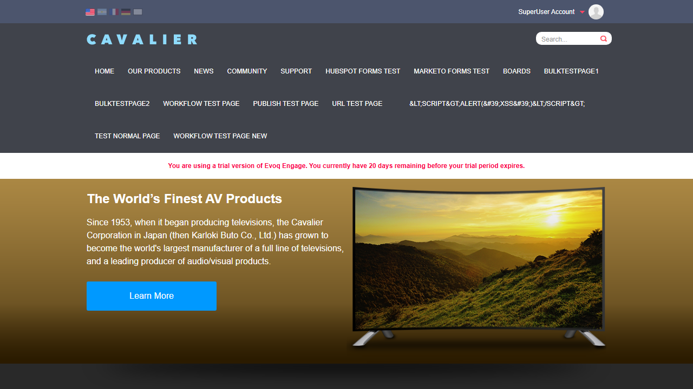

Test 1: Print Mode Rendering
PASSObjective
Verify that print mode (?dnnprintmode=true) renders the page without edit controls while preserving content layout.
Steps Taken
- Logged in as SuperUser (host/Pass123456)
- Navigated to homepage in normal mode to verify admin sidebar is visible
- Navigated to
http://localhost:8081/en-us/?dnnprintmode=true - Verified that admin sidebar (persona bar) is NOT displayed
- Verified that page content is preserved and displayed correctly
Evidence

Normal Mode: Admin sidebar visible (left side)

Print Mode: No admin sidebar - edit controls hidden
Result
PASS - Print mode correctly hides the admin sidebar/persona bar while preserving all page content including navigation, hero section, and product categories.